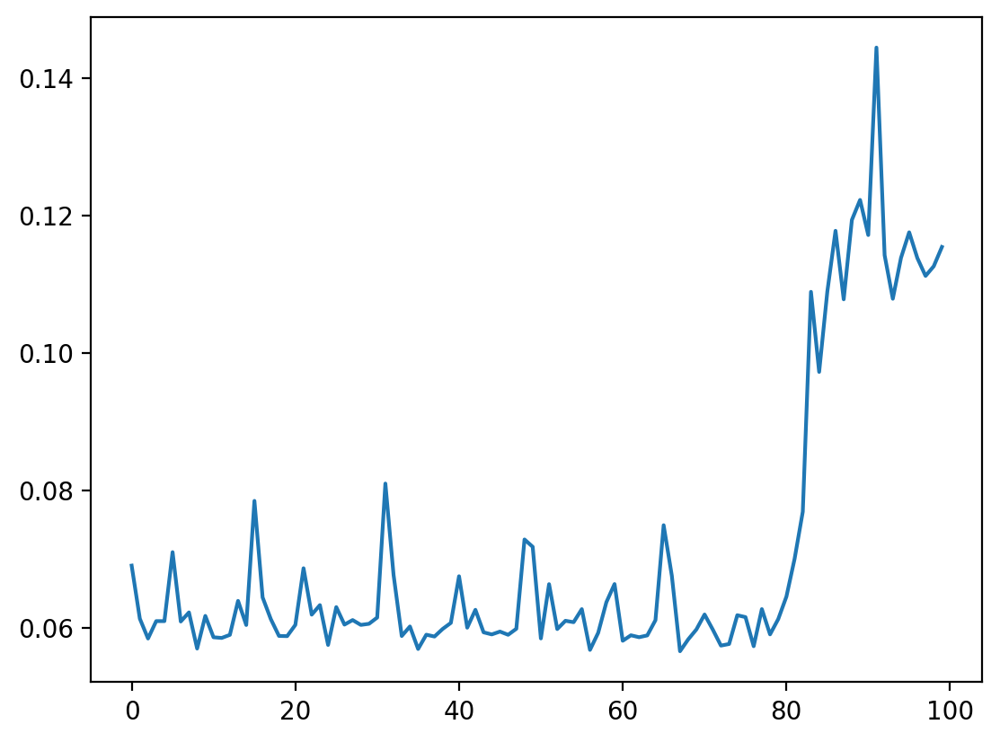

import numpy as np
import time
import matplotlib.pyplot as plt
%config InlineBackend.figure_format='retina'
M, N, K = 40, 30, 20
A_np = np.random.randn(M, K)
B_np = np.random.randn(K, N)A_np.shape(40, 20)tic = time.time()
C_np = A_np@B_np
toc = time.time()
print(toc-tic)0.001062154769897461def time_function(func, args=(), n_iter=10):
"""
Measures the execution time of a function over multiple iterations.
Parameters:
func (callable): The function to be timed.
args (tuple): The arguments to pass to the function.
n_iter (int): The number of iterations to run the function.
Returns:
np.ndarray: An array of execution times per iteration in seconds.
"""
timings = np.zeros(n_iter)
for i in range(n_iter):
start_time = time.time()
func(*args)
end_time = time.time()
timings[i] = end_time - start_time
return timingsdef mm(A, B):
return A@BM, N, K = 1000, 1000, 1000
A_np = np.random.randn(M, K)
B_np = np.random.randn(K, N)
timings_numpy = time_function(mm, args=(A_np, B_np), n_iter=100)timings_numpyarray([0.016289 , 0.01717305, 0.0177319 , 0.01777315, 0.01613069,
0.01745892, 0.01651978, 0.01939702, 0.01579428, 0.01587319,
0.01608706, 0.01417089, 0.01438093, 0.01422 , 0.01515913,
0.01523018, 0.01510096, 0.01514196, 0.01523805, 0.02044392,
0.01564121, 0.01395583, 0.01647115, 0.01535106, 0.01428986,
0.01410389, 0.01599479, 0.01514792, 0.01513696, 0.01560783,
0.01368022, 0.01542401, 0.01463914, 0.01387072, 0.01423097,
0.0146029 , 0.0171392 , 0.01553369, 0.01486421, 0.01637197,
0.01645088, 0.01402497, 0.01469588, 0.01534796, 0.01405406,
0.01513219, 0.01508904, 0.01599312, 0.01427507, 0.01430011,
0.01630902, 0.01597834, 0.01514888, 0.01527619, 0.0153892 ,
0.01557493, 0.01491117, 0.01644635, 0.01448703, 0.01438189,
0.01430511, 0.01405096, 0.0156219 , 0.01632905, 0.01638031,
0.01555705, 0.01478577, 0.01565099, 0.0145731 , 0.0160861 ,
0.01578903, 0.01573801, 0.01575208, 0.01500297, 0.01475286,
0.01654625, 0.01642537, 0.01590681, 0.01389384, 0.01425624,
0.01581192, 0.01650596, 0.01550102, 0.01535511, 0.01536989,
0.01460409, 0.01639605, 0.01432776, 0.01465487, 0.01496196,
0.01525187, 0.01388502, 0.01564717, 0.01541686, 0.01616931,
0.01644707, 0.01413584, 0.01528502, 0.0147419 , 0.01503801])plt.plot(timings_numpy)
def mm_list(A, B):
C = [[0 for _ in range(len(B[0]))] for _ in range(len(A))]
for i in range(len(A)):
for j in range(len(B[0])):
for k in range(len(B)):
C[i][j] += A[i][k] * B[k][j]
return CA_list = A_np.tolist()
B_list = B_np.tolist()
timings_list = time_function(mm_list, args=(A_list, B_list), n_iter=2)--------------------------------------------------------------------------- KeyboardInterrupt Traceback (most recent call last) Cell In[15], line 4 1 A_list = A_np.tolist() 2 B_list = B_np.tolist() ----> 4 timings_list = time_function(mm_list, args=(A_list, B_list), n_iter=2) Cell In[5], line 17, in time_function(func, args, n_iter) 15 for i in range(n_iter): 16 start_time = time.time() ---> 17 func(*args) 18 end_time = time.time() 20 timings[i] = end_time - start_time Cell In[10], line 6, in mm_list(A, B) 4 for j in range(len(B[0])): 5 for k in range(len(B)): ----> 6 C[i][j] += A[i][k] * B[k][j] 7 return C KeyboardInterrupt:
# use timeit to get a more accurate estimate along with the standard deviation
import timeit
time_numpy = timeit.timeit('mm(A_np, B_np)', globals=globals(), number=100)%timeit mm(A_np, B_np)15.5 ms ± 285 µs per loop (mean ± std. dev. of 7 runs, 100 loops each)